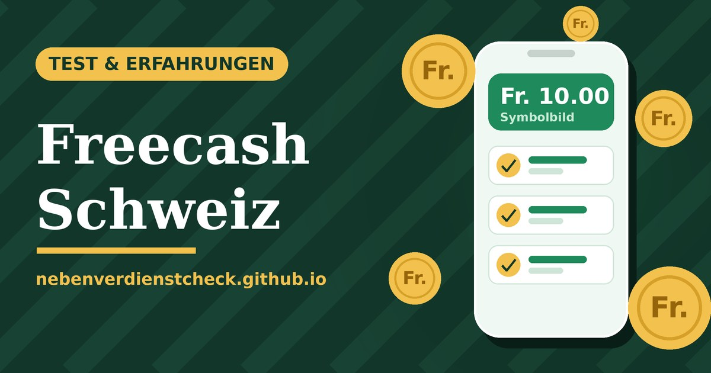

Werbung / Affiliate-Link: Diese Seite enthält Links, für die ich bei einer Anmeldung eine Provision erhalten kann. Für dich entstehen keine Mehrkosten.

Freecash in der Schweiz: Lohnt sich die App wirklich?
Freecash ist eine Plattform, die Belohnungen für kleine Aufgaben zahlt: Apps ausprobieren, Spiele bis zu einem bestimmten Level spielen und Umfragen beantworten. Hier steht, was die Plattform nach öffentlichen Angaben bietet und wo die Haken liegen. Ein Haupteinkommen ist das nicht.
Verdiene durch Hilfe für andere
Die nächsten 3 Freunde, die beitreten und ein Spiel spielen, bringen dir Fr. 9.01 pro Person (sonst Fr. 2.25). Dein Freund erhält ebenfalls Fr. 10.
Plus Fr. 10 extra, wenn dein Freund seine erste Auszahlung macht.
Jetzt mit meinem Link starten (Werbung) Stand 18.10.2026, laut Freecash. Beträge, Dauer und Bedingungen können sich ändern. Belohnt werden nur echte neue Nutzer aus berechtigten Ländern (CH, UK, CA, AU, KR, JP), keine Doppelaccounts. Vollständige Bedingungen.bd2f617508Wie es funktioniert
Fair bleiben: nur ein Konto pro Person, kein VPN, keine Selbstempfehlung. Der Bonus gilt nur, wenn du in einem berechtigten Land wohnst.
Jetzt Freecash ansehen (Werbung)
Was ist Freecash?
Freecash wird laut Impressum der Plattform von der Almedia GmbH in Berlin betrieben. Du meldest dich kostenlos an, wählst Aufgaben aus und bekommst bei Erfüllung ein Guthaben gutgeschrieben. Das Mindestalter beträgt nach öffentlichen Berichten 16 Jahre.
Welche Aufgaben gibt es?
| Typ | Aufwand | Belohnung (laut Berichten) |
|---|---|---|
| Umfragen | 5–30 Minuten | bis ca. 3 €, Ausschluss möglich |
| App-Tests / Angebote | meist 1–5 Minuten | ca. 1–70 € je Aufgabe |
| Spiele-Level | oft viele Stunden | ca. 1–100 €, abhängig vom Level |
Die Beträge sind Obergrenzen einzelner Angebote, keine Durchschnittswerte. Wie viele Aufgaben bei dir erscheinen, hängt von Land und Gerät ab.
Auszahlung
Laut Freecash-Hilfe gibt es Auszahlung per PayPal, Banküberweisung, Geschenkkarten und Kryptowährung. Der Mindestbetrag liegt je nach Region und Methode zwischen etwa 5 und 20 Dollar. Bei der ersten Auszahlung musst du deine E-Mail bestätigen und dich per Ausweis verifizieren (Selfie plus Ausweisdokument).
Vorteile und Nachteile
Für wen lohnt es sich?
Für Leute, die sowieso Spiele spielen oder gelegentlich ein paar Franken nebenher sammeln wollen. Nicht für alle, die ein festes Einkommen suchen. Lies dazu auch Wie viel ist realistisch? und meine Tipps vor dem Start.